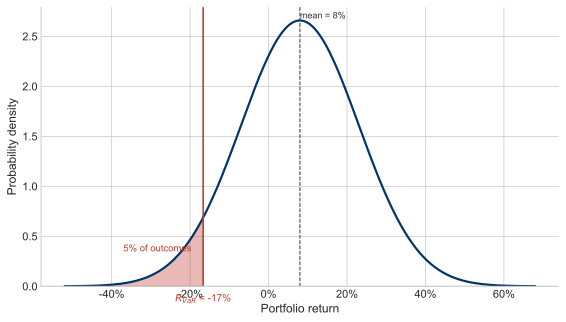

Chapter III
Preferences and Investor Choice
Utility functions, iso-utility curves, the safety-first criterion, the Sharpe Ratio, and Value at Risk.
Introduction
The previous chapter presented Markowitz's portfolio selection model while omitting a crucial element: how individual investors actually choose among portfolios. Although the efficient frontier represents the superior combination of assets, it contains infinitely many possibilities. The central challenge becomes selecting one optimal portfolio from this set, requiring investors to express their preferences within risk-return space.
Investors make decisions based on numerous factors that cannot be reduced to two dimensions. Furthermore, real-world investing allows strategy adjustments as circumstances change — a flexibility the single-period Markowitz model doesn't accommodate. This chapter explores methods for approximating investor preferences in mean-variance space, acknowledging their limitations when applied to multi-period decision-making.
A Bridge from Chapter 2: The Odds of Beating the Riskless Rate
Chapter 2 ended at the tangency portfolio $M$ and the Capital Market Line — the line from the riskless rate $R_f$ drawn tangent to the risky frontier. We singled out $M$ as the portfolio with the highest Sharpe ratio, $(\bar{R}_M - R_f)/\sigma_M$. That sounds like a statement purely about risk-adjusted return. It is also, more surprisingly, a statement about probability: when returns are normally distributed, $M$ is the single portfolio most likely to beat the riskless rate over the period. This equivalence is the hinge between the geometry of Chapter 2 and the preference-driven choice of this chapter.
Demonstration: the highest Sharpe ratio gives the best odds of beating $R_f$
Let a portfolio’s return $R_p$ be normally distributed with mean $\bar{R}_p$ and standard deviation $\sigma_p$. The probability that it clears the riskless rate is
$$P(R_p > R_f) = P\!\left(Z > \frac{R_f - \bar{R}_p}{\sigma_p}\right) = \Phi\!\left(\frac{\bar{R}_p - R_f}{\sigma_p}\right) = \Phi\big(\text{Sharpe}_p\big),$$where $Z$ is a standard-normal variable and $\Phi$ its cumulative distribution function. Because $\Phi$ is strictly increasing, whatever portfolio maximizes the Sharpe ratio $(\bar{R}_p - R_f)/\sigma_p$ must also maximize the probability of finishing above $R_f$. That portfolio is the tangency portfolio $M$. Maximizing risk-adjusted return and maximizing the odds of clearing the riskless rate are the very same problem.
Every point on the Capital Market Line shares this property. A portfolio on the CML holds a fraction $a$ in $M$ and $1-a$ in the riskless asset, where $a>1$ denotes a levered (borrowed) position. Its mean and standard deviation are $\bar{R} = R_f + a(\bar{R}_M - R_f)$ and $\sigma = a\,\sigma_M$, so its Sharpe ratio is
$$\frac{\bar{R} - R_f}{\sigma} = \frac{a(\bar{R}_M - R_f)}{a\,\sigma_M} = \frac{\bar{R}_M - R_f}{\sigma_M},$$independent of $a$. The conservative investor with 30% in $M$ and the aggressive one levered to 150% hold positions with the same Sharpe ratio, and therefore the same probability $\Phi(\text{Sharpe}_M)$ of beating the riskless rate — even though the magnitudes of the gains and losses differ enormously. Leverage changes the stakes, not the odds of finishing ahead of $R_f$.
Adapting the idea to a hurdle return. Nothing requires the threshold to be $R_f$. Suppose you must instead clear a hurdle $H$ — a pension’s actuarial rate, a spending target, a benchmark to beat. The same algebra gives $P(R_p > H) = \Phi\big((\bar{R}_p - H)/\sigma_p\big)$, so the best portfolio is the one that maximizes $(\bar{R}_p - H)/\sigma_p$: draw the line from $H$ on the vertical axis tangent to the frontier, and the point of tangency is the portfolio most likely to exceed $H$. Raising the hurdle pivots that line upward and slides the chosen portfolio toward higher risk and return; lowering it slides the choice back toward the minimum-variance end. This is Roy’s safety-first criterion, which we take up in earnest in Section II.
I. Choosing a Single Portfolio
Iso-Utility Curves and Investor Preferences
One approach involves mathematical modeling of investor preferences through iso-utility curves. These curves function like topographic map contours, representing consistent utility levels. They demonstrate how investors trade off risk against return in two-dimensional space. Like elevation lines on maps, iso-utility curves are nested, with higher curves representing greater utility levels.
The mathematical foundation typically uses convenient functions — logarithmic or quadratic — to capture preference structures. The essential characteristic requires increasing return demands as risk exposure increases. A common form:
Utility Function
$$U = \bar{R}_p - \frac{1}{2}\lambda\,\sigma_p^2$$where $\lambda$ is the investor's risk-aversion coefficient. Higher $\lambda$ means more risk aversion.
Characterizing Risk Aversion
Iso-utility curve curvature reveals investor risk preferences. Four investor types exhibit distinct curve patterns:
- More risk-averse investors: Demand sharply higher expected returns when volatility increases (steep curves)
- Moderately risk-averse investors: Show balanced return-risk requirements
- Less risk-averse investors: Display flatter curves with moderate return increases for additional risk
- Risk-loving investors: Paradoxically demand lower expected returns while assuming greater risk to maintain utility levels
Figure 3.1. The utility “mountaintop.” Each shaded step is a band of equal utility, $U = \bar{R}_p - \tfrac{1}{2}\lambda\sigma_p^2$; the colors climb from the low-utility valley (blue) toward the investor’s bliss (gold). A risk-averse investor ($\lambda>0$) values return and dislikes risk, so bliss lies to the upper left and the steps bow upward. Slide $\lambda$ to 0 and the investor becomes risk-neutral — the steps flatten into level bands and only return matters. Push $\lambda$ negative and the investor is risk-loving — bliss swings to the upper right. Tick drop in the efficient frontier to watch the optimal portfolio appear where the highest attainable step is exactly tangent to the frontier — and slide $\lambda$ to see that tangency travel along it.
Finding Optimal Portfolios
The optimization procedure identifies where the efficient frontier is tangent to the highest achievable iso-utility curve for that investor. This tangency point represents the unique portfolio providing maximum utility for risk-averse individuals.
Practical Limitations
The methodology's significant drawback involves determining individual or institutional risk aversion. Asset allocators must map client preferences — analogous to mapping unknown terrain — without certainty regarding consistency over time. Preferences may shift unpredictably between periods.
II. Another Approach: Preferences about Distributions
The Shortfall Criterion
An alternative strategy focuses on return distribution characteristics, specifically probability mass in lower-tail regions. This "shortfall" criterion offers simplicity by avoiding complete preference mapping. Instead, investors specify a floor return — a minimum threshold they want to avoid breaching. The criterion then selects the efficient frontier portfolio minimizing the probability of returns dropping below that floor.
Mathematical Expression
For a specified floor return equal to the riskless rate $R_f$, calculate this ratio for each frontier portfolio:
Shortfall Ratio
$$S = \frac{\bar{R}_p - R_f}{\sigma_p}$$The shortfall ratio resembles a $t$-statistic; higher values indicate greater probability of exceeding the floor. The portfolio maximizing this value has the highest probability of surpassing $R_f$.
Graphical Solution
The process can be solved graphically without complex calculations:
- Identify the floor return level on the vertical axis
- Draw a line from this point tangent to the efficient frontier
- This tangency point minimizes the probability of returns falling below the specified floor
The Sharpe Ratio
When $R_f$ (the riskless rate) serves as the floor, the tangency line's slope equals the Sharpe Ratio:
Sharpe Ratio
$$\text{Sharpe Ratio} = \frac{\bar{R}_p - R_f}{\sigma_p}$$The portfolio maximizing this ratio possesses special significance: it minimizes the probability of underperforming Treasury bills economy-wide. Equivalently, it maximizes the probability of delivering an equity premium — the single best portfolio for beating T-bills if forced to choose one.
Key Concept: The Sharpe Ratio
The Sharpe Ratio measures return per unit of risk relative to the risk-free rate. The portfolio maximizing it is the tangency portfolio — the same portfolio $M$ that defines the Capital Market Line. It is the single best risky portfolio for any investor who can borrow or lend at the risk-free rate.
Flexibility of Safety-First
Because the floor can be set anywhere, the safety-first criterion is really a family of choices. When the floor is the riskless rate $R_f$, the tangent line is steepest and its point of tangency is the max-Sharpe portfolio $M$. Raise the floor to a higher target return $H$ — a goal you hope to clear — and the tangent line starts from a higher point on the vertical axis, touches the frontier further out, and is flatter. The reader who wants an aggressive goal is thus steered, by the same geometry, toward a riskier portfolio — and toward a lower probability of actually clearing that higher bar.
Figure 3.2. The safety-first choice, made interactive. Drag the floor $H$ up and down the vertical axis. For each floor, the line of steepest slope to the stock–bond frontier picks out the portfolio most likely to clear it — and its stock/bond mix slides along the frontier as you move the floor. Set $H$ at the riskless rate and you recover the max-Sharpe portfolio $M$; raise the goal above it and the chosen portfolio grows riskier (more stocks), on a flatter line — a smaller safety-first ratio, and a lower probability of actually reaching the higher goal.
The "safety-first" framework accommodates multiple approaches:
- Maximizing probability of exceeding a floor: Find the tangency point as described above
- Testing feasibility: Specify both a desired floor and probability; determine whether portfolios meeting these criteria exist
- Finding sustainable floors: Pose the inverse question — "Given my acceptable probability, what floor can I reliably achieve?"
For the third approach, set the slope equal to appropriate $t$-statistic values:
| Confidence Level | Required Slope ($t$-value) |
|---|---|
| 90% | 1.28 |
| 95% | 1.644 |
| 99% | 2.32 |
Once the slope is chosen, move the line vertically until tangent to the efficient frontier. This yields both a portfolio choice and its corresponding floor return.
III. A Note on Value at Risk
Definition and Purpose
Value-at-Risk (VaR) measures potential portfolio losses over specified time horizons. It has become increasingly prevalent in banking (for capital requirements calculation) and investment management (for risk control). VaR provides a probability-based loss estimate given a particular confidence interval and time period.
Calculation Method
Assuming normally distributed portfolio returns, VaR calculation requires the portfolio expected return $\bar{R}_p$, portfolio standard deviation $\sigma_p$, and the $t$-statistic $T$ for the chosen confidence interval:
VaR Return Threshold
$$R_{\text{VaR}} = \bar{R}_p - T \cdot \sigma_p$$Value at Risk (dollars)
$$\text{VaR} = |R_{\text{VaR}}| \times \text{Total Portfolio Value}$$
Figure 3.3. Value at Risk (VaR) at the 95% confidence level. The shaded left tail represents the 5% probability of losses exceeding the VaR threshold. $R_{\text{VaR}} = \bar{R}_p - T \cdot \sigma_p$.
Practical Example
Consider a $100 million pension portfolio with 60% stocks and 40% bonds, analyzed at the 95% confidence interval over one year.
Assumptions:
- Annual expected stock return: 10%
- Annual expected bond return: 5%
- Stock standard deviation: 17%
- Bond standard deviation: 7%
- Stock-bond correlation: 0.5
- 95% confidence $t$-statistic: 1.645
Portfolio Expected Return:
Portfolio Standard Deviation:
Value-at-Risk:
The portfolio is expected to experience losses of at least $11.5 million approximately one year out of every twenty, though this calculation does not suggest the remaining $88.5 million escapes risk entirely.
Every line of that arithmetic is a move in the same mean–standard-deviation space we have used all chapter — VaR is the safety-first line run in reverse. Instead of choosing a floor and hunting for the portfolio that best clears it, we hold the portfolio fixed, let the confidence level fix the slope, and read the floor off the axis. The figure below lets you walk the five steps.
Figure 3.4. Value at Risk as a construction in mean–standard-deviation space — the safety-first line run in reverse. (1) The confidence level fixes the slope of the line (the $t$-value $T$: 1.28, 1.64, or 2.33). (2) The portfolio’s risk, return, and the stock–bond correlation place it as a point in the space (slide the mix to move it along the combination curve). (3) Slide a line of that slope until it touches the portfolio. (4) Read the return where the line meets the vertical axis — that is $R_{\text{VaR}}$, the loss threshold. (5) Multiply by the dollar value of the portfolio to get the Value at Risk. Figures are annual, for a one-year horizon.
Key Concept: Value at Risk
VaR expresses portfolio risk as a dollar amount: "With X% confidence, we will not lose more than $Y over the next period." It is a direct extension of the safety-first framework and requires the same normality assumptions. VaR is widely used in banking regulation and institutional risk management.
Key Assumptions and Limitations
- Normal distribution of returns: This assumption frequently breaks down when portfolios contain derivatives, producing fat-tailed distributions
- Historical representativeness: Estimated distributions and correlations must accurately reflect future conditions; estimation error increases significantly with numerous asset classes
- No return autocorrelation: The model assumes independence across periods; positive trends cause losses to compound across multiple periods
IV. Conclusion
Creating efficient frontiers from historical or projected statistics involves inherent uncertainty due to statistical estimation errors. However, this uncertainty is minor compared to the difficulty of translating investor preferences into mean-standard deviation space. Economic knowledge about preferences remains limited, particularly within single-period frameworks. While economists understand that people prefer more to less and typically avoid uncompensated risk, preferences beyond these basics involve considerable speculation. Consistency across time periods remains questionable.
The theoretical solution requires specifying an investor utility function, deriving indifference curves, and locating the highest attainable utility level within the feasible set — typically a tangency point. Practical implementation proves difficult: estimating utility functions and subsequently explaining them to investors presents major obstacles.
The "safety-first" approach offers a practical alternative beginning with a straightforward preference question: "What is your floor return?" Once specified, portfolio selection follows logically. This methodology allows identifying the probability of exceeding the selected floor by observing the tangency line's slope. The framework further permits portfolio identification by simultaneously specifying both a floor and probability.
Value-at-Risk represents an increasingly popular risk measurement and control method, functioning as a straightforward extension of safety-first principles when portfolio assets display normally distributed returns.
Epilogue: Simplification Through Risk-Free Securities
Introducing a genuine risk-free security dramatically simplifies portfolio decisions for all investors. The optimal choice reduces to selecting proportions of the riskless asset and a single risky portfolio ($T$) — the tangency portfolio:
- More risk-averse (MRA) investors: Hold combinations of the tangency portfolio and Treasury bills
- Less risk-averse (LRA) investors: Borrow at the riskless rate and invest proceeds entirely in the tangency portfolio
If practitioners could definitively identify the tangency portfolio's composition, a single product could serve every investor's needs by simply varying proportions of the riskless asset and this portfolio.
What constitutes portfolio T? The answer is provided in the subsequent chapter.